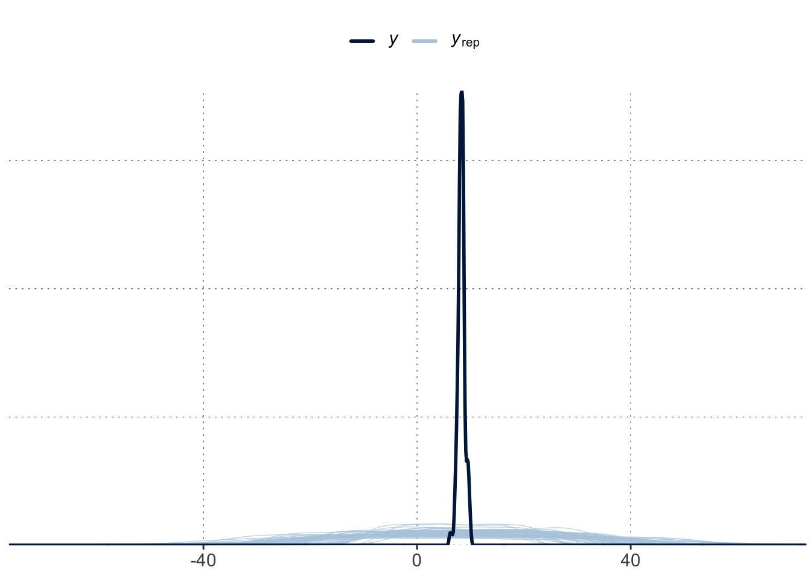
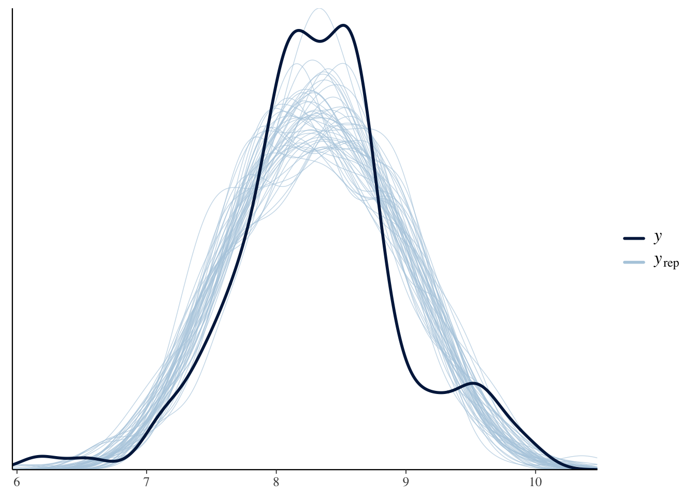

Model criticism: predictive checks & Bayesian \(p\)-values
Bayesian regression: theory & practice
Author
Michael Franke
Model criticism is an integral part of a rigid Bayesian workflow. In a previous tutorial, we already looked at how to obtain samples from a model’s predictive distributions, e.g., in order to assess whether the model’s prior assumptions are sound. That is part of model criticism. In general, model criticism asks: is my model adequate? Many aspects can influence what makes a model adequate. Prior assumptions and what they entail are one aspect. The other is whether a given model is compatible with some observed aspect of the data. In this tutorial we focus on this latter aspect. We look particularly at two concepts to criticize (check for adequacy) a model given some observed data:
visual predictive checks, and
Bayesian (posterior) predictive \(p\)-values.
Preamble
Here is code to load (and if necessary, install) required packages, and to set some global options (for plotting and efficient fitting of Bayesian models).
Toggle code
# install packages from CRAN (unless installed)pckgs_needed <-c("tidyverse","brms","rstan","rstanarm","remotes","tidybayes","bridgesampling","shinystan","mgcv")pckgs_installed <-installed.packages()[,"Package"]pckgs_2_install <- pckgs_needed[!(pckgs_needed %in% pckgs_installed)]if(length(pckgs_2_install)) {install.packages(pckgs_2_install)} # install additional packages from GitHub (unless installed)if (!"aida"%in% pckgs_installed) { remotes::install_github("michael-franke/aida-package")}if (!"faintr"%in% pckgs_installed) { remotes::install_github("michael-franke/faintr")}if (!"cspplot"%in% pckgs_installed) { remotes::install_github("CogSciPrag/cspplot")}# load the required packagesx <-lapply(pckgs_needed, library, character.only =TRUE)library(aida)library(faintr)library(cspplot)# these options help Stan run fasteroptions(mc.cores = parallel::detectCores())# use the CSP-theme for plottingtheme_set(theme_csp())# global color scheme from CSPproject_colors = cspplot::list_colors() |>pull(hex)# names(project_colors) <- cspplot::list_colors() |> pull(name)# setting theme colors globallyscale_colour_discrete <-function(...) {scale_colour_manual(..., values = project_colors)}scale_fill_discrete <-function(...) {scale_fill_manual(..., values = project_colors)}
Visual predictive checks
Let’s have a closer look at prior and posterior predictives, and the functions that we can use to explore them. Here, we fit a regression model with “opinionated priors” (also used in a previous tutorial), obtaining both posterior and prior samples for it.
Toggle code
# define "opinionated" priorsprior_opinionated <-c(prior("normal(0.2, 0.05)", class ="b"),prior("student_t(3, 8, 5)", class ="Intercept"))# fit model to data (i.e., obtain samples from the posterior)fit_posterior <-brm( avg_temp ~ year,prior = prior_opinionated,data = aida::data_WorldTemp )# obtain samples from the priorfit_prior <- stats::update( fit_posterior,sample_prior ="only" )
A visual predictive check is a method to visually assess whether a model’s predictions (either prior or posterior) are compatible with some aspect of the observed data. This means that there is not just one visual predictive check, but as many as there are aspects in which a model’s predictions can fail to capture the actual data.
The bayesplot package has a number of visual predictive check functions nested inside the function pp_check. Here are examples.
Basic VPCs
Without additional argument pp_check compares the overall observed distribution of the response variable to the prior/posterior predictive distribution. Check the observed distribution (marginal of \(y\)) first:
The following code produces 50 samples from the prior predictive distribution of our model, and plots the marginal distribution of predicted \(y\) values for each (in blue) together with that of the observed data:
Toggle code
brms::pp_check(fit_prior, ndraws =50)

This plot shows that this prior is way less “opinionated” or biased than its name may suggest, at least when it comes to data-point predictions. The range of a priori plausible \(y\)-values is very broad, compared to the range that we actually observe.
Let’s now turn to the posterior predictive check, which can reveal systematic problems with the model, such as here: an inability to capture the bimodal-ish shape of the data.
Toggle code
brms::pp_check(fit_posterior, ndraws =50)

More specific VPCs
There are number of different plots pp_check is able to produce. For fine-grained plotting and exploring, the bayesplot package offers flexible plotting tools. These come in pairs: predicitve distributions only show the predictions, while predictive checks also show the data. See help("PPD-overview") and help("PPC-overview") for more information.
The general workflow is that you first extract samples from the relevant predictive distribution (in matrix form), like so:
The light blue histogram indicates the distribution of the values of the test statistics under the predictive distribution (here: posterior). The darker blue line indicates the value of the test statistic for the observed data.
In this case, the observed test value is rather central in the posterior predictive distribution, thus suggesting that, as far as the standard deviation is concerned, the model cannot be criticized for its posterior predictions.
Exercise 2
Try a similar ppc_stat plot for the prior predictive. Can you find a test statistic for which the model looks adequate?
Solution
Looking at the prior predicted mean is not too bad (at least visually).
That is because the predictions are very wide. There is nothing wrong about that! But, of course, another criterion that the prior predictive distribution blatantly fails is to predict the deviation in the data adequately (again this is, arguably, how it should be if we want to learn from the data):
Using model predictions, we can also compute Bayesian \(p\)-values as handy summary statistics for visual predictive checks. A single number never replaces the information we obtain from (good) plots, but numbers are easier to communicate and may help interpretation (though should never solely dominate decision making).
Caution: While Bayesian \(p\)-values follow the same logic as frequentist \(p\)-values, they are not necessarily “calibrated” for long-term Type-I error control, as frequentist \(p\)-values are.
Standard deviation as test statistics
Let’s focus on the posterior model for the temperature data and apply a rigorous (data-informed) test statistic: the standard deviation for all data recorded up to 1800. We know from plotting our data that the early measurements seem to have a lower accuracy, so would require a higher standard deviation. Here, we ask: if we use the predictions from our regression model (fitted to all of the data), will we make predictions for the data from 1800 or before that have a credibly different (lower) standard deviation than what we actually see in this subset of the data?
Toggle code
# get 4000 sets of posterior predictive samples;# one set for all data points up to 1800postPred_y <- tidybayes::predicted_draws(object = fit_posterior,newdata = aida::data_WorldTemp |>select(year) |>filter(year <=1800),value ="avg_temp",ndraws =4000) |>ungroup() |>select(.draw,year, avg_temp)# calculate the standard deviation for each set of samplessd_postPred <- postPred_y |>group_by(.draw) |>summarize(sd_post_pred =sd(avg_temp)) |>pull(sd_post_pred)# calculate the SD of the $y$-measurements in# the data (up to 1800)sd_data <- aida::data_WorldTemp |>filter(year <=1800) |>pull(avg_temp) |>sd()# approx. p-value <- proportion of samples that have# value of the test statistic that is more extreme# than that of the datamean(sd_data < sd_postPred)
[1] 0.00025
Exercise 3:
Make sure you understand how the code in the last code block works. Interpret the numerical result.
Solution
We see an estimated \(p\)-value of (close to) zero, which is really bad (for the chosen test statistic and manner of comparison). The test statistic we chose was the standard deviation, and we wanted to see if the posterior predictions of data points would have have more extreme values of the test statistic, where “more extreme” means “even higher” in the current context. The posterior predictive \(p\)-value or (close to) zero means that the model (almost) never predicts data with a value of the test statistic that is as extreme as that in (the relevant subset of) the data. So in this case, we would clearly have ground of accusing the model to fail to predict the aspect captured by this test statistic.
[Excursion:] Likelihood as a test statistics
With some more effort, we can use the code above to calculate a Bayesian \(p\) value for the same data and model but assuming that the likelihood of the data (observed or predicted) is the test statistic. The calculation now becomes more intricate, because not only do we need to obtain samples of predicted data observations from the (fitted or prior) model, but we also need to approximate the likelihood for each predicted data observation with (a second set of) samples, thus using a nested Monte Carlo simulation. To implement the latter step, note that brms::log_lik is a handy function for obtaining the likelihood of some \(y'\) –be it observed, predicted or made up– given a model (prior or posterior).
(Another example of Bayesian prior\(p\)-value computation is included in the chapter on hypothesis testing.)
Interpret the result you get (also in relation to the results from the previous exercise).
Solution
The Bayesian posterior predictive \(p\) value for likelihood as a test statistic is around 0.8. We should not interpret it in the same binary style as in the frequentist domain: we are not looking for a hard cut-off at which to reject the model / assumption. In this case, a value of about 0.8 is not concerning. It means that in about 80% of the samples, the likelihood of data samples was lower than that of the data itself (from the point of view of the posterior model). Predicting data which is frequently less likely is actually good: it means that the data iself lies in a high-likelihood region of the model’s posterior predictive.
Taken together, the last two results of model criticism in terms of Bayesian \(p\)-value yields the following picture:
The model does not seem problematic when we focus on whether the likelihood of the observed data appears to be extreme as compared to the distribution of the likelihood of generated data from the posterior predictive. This suggests that there is nothing objectionable at this abstract, holistic way of looking at the model and its predictions.
If we look more closely at a particular aspect of the observed data, the high spread of data points in early measurement, the model does seem to have trouble to capture this aspect.
In practical applications of such model criticism, the important question is therefore: which aspects of the data are particularly relevant to be captured (for whatever it is that we want to do with the model). It is for those aspects that we should run visual or \(p\)-value based model criticism.